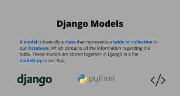
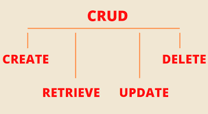
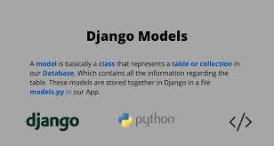
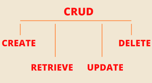
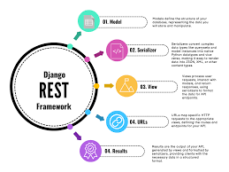
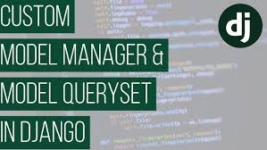

Rock-Paper-Scissors is a simple two-player game where, at a signal, players make moves with their hands, representing a rock, a piece of paper, or a pair of scissors.
The winner is determined according to a set of rules. If the two players make the same move, it’s a tie.
On tne other hand, if the two players make different moves, Rock beats Scissors, Paper beats Rock and Scissors beats Paper.
The program is a simple version of the game with the two players being the User herein known as Player and the Computer herein known as CPU.
When the program is run, the User (Player) enters option "R" or "P" or "S" representing "Rock" or "Paper" or " Scissors".
 
This is a Django project to create an app called blog. The blog app contains a model called Post with the following fields: Title, Author, Created_date, and Published_date.


This is a Django project to create an app called blog. The blog app contains a model called Post with the following fields: Title, Author, Created_date, and Published_date.

This is a Django project to create an app called blog. The blog app contains a model called Post, Views and Templates.

This is a Django project to create the beginnings of a URL shortener service.
The project creates links app which contains a model called Link, serializers and views. It only allow users to interact with active/public urls through the API.

This is a Django project for a URL shortener service. The project creates links app which contains a model called Link, serializers and views.
It only allow users to interact with active/public urls through the API. Users of the API can view all active links and can also view links created during the week.